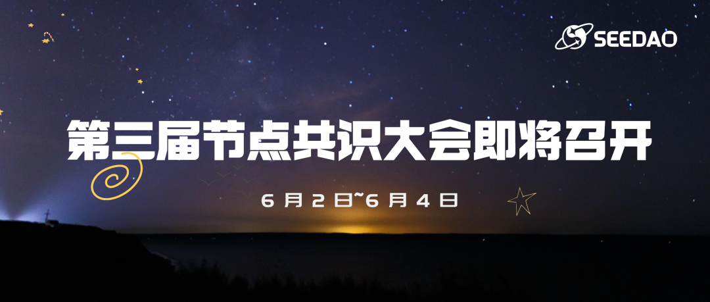
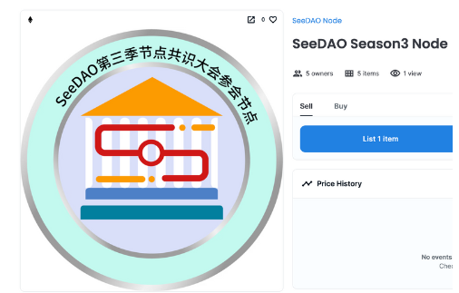
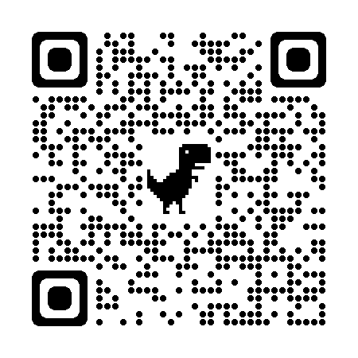
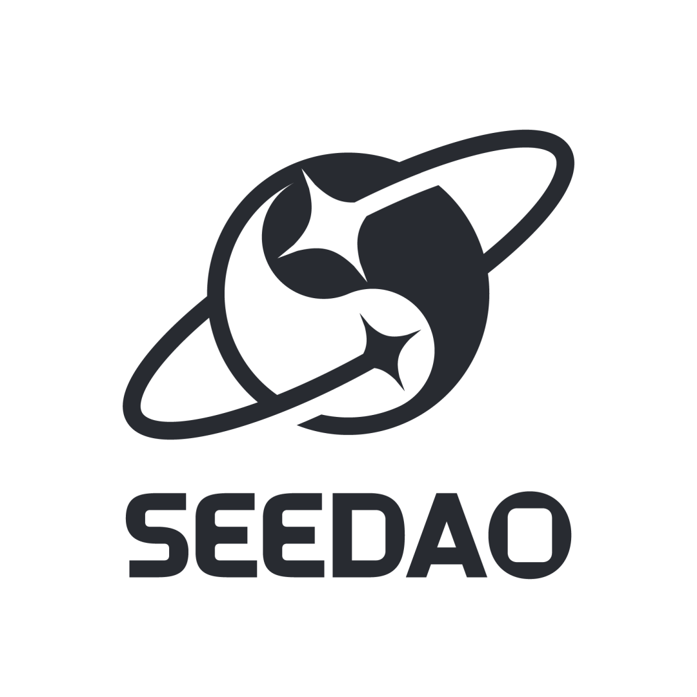

第三季 SeeDAO 节点共识大会时间：
6 月 2 日~6 月 4 日
SeeDAO
一、节点资格获取
【第三季节点共识大会节点资格】
根据 SeeDAO 节点共识大会规则，截至 5 月 26 日，符合 SCR 有效积分数总额 20000 （含）以上、本季积分获得 5000 分以上并持有 SGN 者，在本季具有节点身份 Claim 权力，在 Claim 后方得算作正式节点。
https://seedao.notion.site/fef27c50d4824182931b8ee438e9553e
SeeDAO
特别说明
具备节点资格的社区成员需在 https://node.seedao.xyz/ 完成节点 SBT Claim，才能成为正式有效节点。活动网站中的 Claim 按钮（以太坊主网）已开放 mint ！欢迎大家登入完成节点 Claim！
Claim 完成后，可在 Opensea 等 NFT 平台查看自己的节点 NFT，后续可据此 SBT 进行社区重大提案投票治理。

SeeDAO 的节点在整个社区治理体系中位于顶层，SeeDAO 节点共识大会也是社区最高权力机构，节点身份在其有效期内拥有决议节点大会提案、P3 提案的权利，并可通过参与治理获得治理积分收益。
SeeDAO
节点 SBT Claim 地址
https://node.seedao.xyz/
【节点权益】

https://www.notion.so/seedao/Discord-db4f4fa41e8d42008039e7786f977483
2、参与治理投票，获得治理挖矿激励。
SeeDAO
市政厅工作评价
请各位节点在 Claim 节点 SBT 后，尽快到 https://forum.seedao.xyz/ 参与到市政厅各岗位评估的投票，该投票至 6月04 日 24:00 UTC+8 即关闭。积极参与，来瓜分第三季治理挖矿激励！
SIP-81：第二季市政厅工作评估 - 内部治理条线
https://forum.seedao.xyz/thread/sip-81-44437
SIP-82：第二季市政厅工作评估 - 品牌条线
https://forum.seedao.xyz/thread/sip-82-44438
SIP-83: 第二季市政厅工作评估 - 技术条线
https://forum.seedao.xyz/thread/sip-83-44439
SeeDAO
本次节点共识大会提案一览
扫码查看提案：
https://seedao.notion.site/e5340137953d424e894454562f7886e6?v=dae8a4e6eb0146598f159d145e68660d
